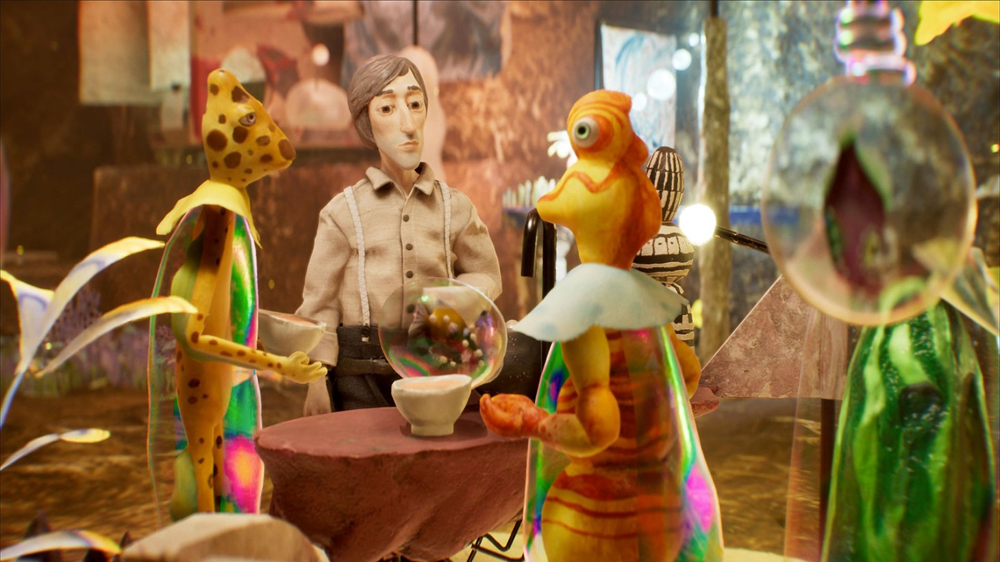

Es un juego hecho por StopMotion, como por ejemplo peliculas de Tim Burton como podrían ser "El extraño mundo de Jack" "El cadaver de la novia" o la pelicula ganadora de un oscar de "Pinocho" de Guillermo del Toro. Harold Halibut tomó 10 años en realizarse y tiene la premisa de que somos Harold en un planeta lleno de agua que fuimos enviados por la tierra, tenemos el trabajo de hacer encargos para todos en la nave hasta que un día haciendo nuestras tareas nos encontramos lo que será nuestro amigo pececín.
Descripción del juego 2